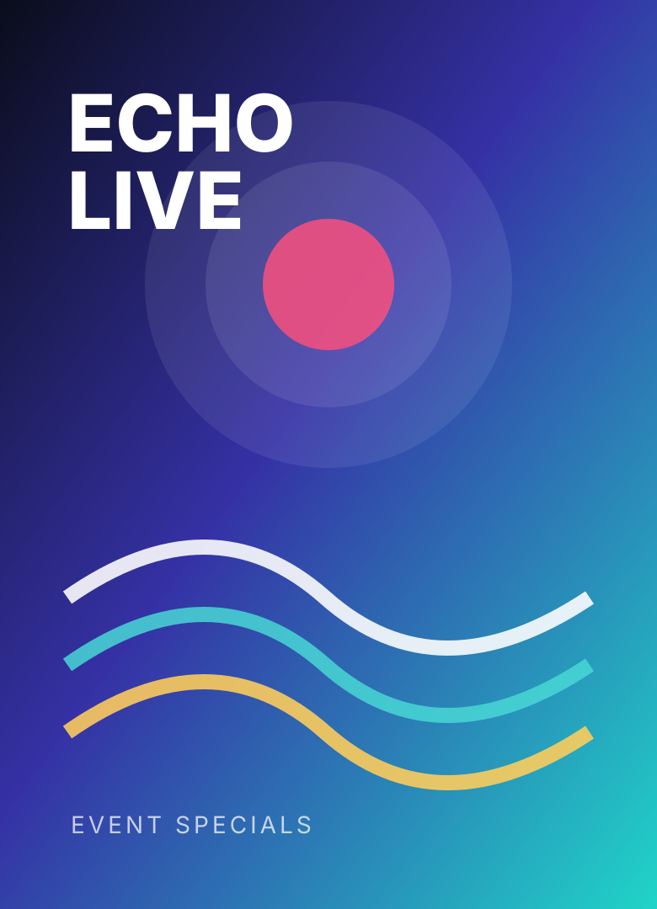

Weekly studio magazine
The Signal Room
A studio-led weekly program tracking the signals behind culture, entertainment, technology, and public conversation.
- Format
- 45 minute episodes
- Status
- In production
- Best for
- Broadcast, YouTube, clips
Shows & productions
The Echorium slate is built for strong identities: each production has a repeatable format, a distinctive visual language, and a path from episode to online recording.
Weekly studio magazine
A studio-led weekly program tracking the signals behind culture, entertainment, technology, and public conversation.

Short documentary series
Location-shot documentary episodes following communities, creators, local spaces, and overlooked ideas with a cinematic but practical footprint.

Interview and roundtable
A conversation series with the people behind completed work: directors, editors, performers, producers, designers, and technical crew.

Live event specials
One-off live programs and specials built around launches, premieres, performances, community events, and cultural moments.